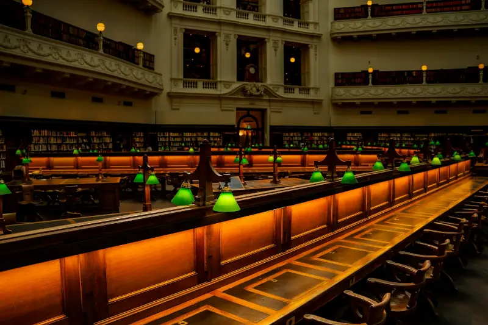

Dr. Helena Marsh
Warden
Head of the College. Chairs the Governing Body and presides at Matriculation and Commencement.
ContactFICTIONALAurelian College of the Arts is not a real school. This is a UX design student project by Uyen Truong and David Pierre-Louis and does not accept applications.
Visit Day is Saturday, November 14. Tour campus, sit in on a class, and meet a House. Save your spot
About
A private college of the performing, visual, and design arts, founded in 1847 on a simple idea: talent should never depend on money.
Our mission
Aurelian trains artists to make work of the highest craft, to make it with others, and to make a living from it. We keep the price low and the studios open so that anyone with talent can come.

Since 1847
Our founder
Eleanor Aurel grew up above her father's sign-painting shop on Water Street and was grinding pigments before she could read. At nineteen she talked her way onto the paint frame at the Park Theatre, and for the next eighteen years she painted skies, palaces, and forests for other people's plays. The theater paid her half of what it paid the men, and for most of those years the playbills credited her scenery to her brother Samuel.
In 1846 an aunt left her $4,000. She spent most of it on a farmhouse and a hay barn in Bloomingdale, then open fields north of the city, and in the autumn of 1847 she opened them as a school with eleven students. Each family paid what it could; four paid nothing. She taught scene painting and perspective herself, and hired a dancing master, a singing teacher, and an actor from the Park to teach the rest.
The Park Theatre burned down the next year, and several of its company came up to teach at the farm. Most of them stayed. When she died in 1871, she left the College everything she owned, with one line in her will that we still follow: No pupil is to be sent away for want of money.
Eleanor Aurel opens a school in a farmhouse and a barn in Bloomingdale, with eleven students.
The Long Gallery opens, and Art History begins.
Musical Theater joins Terpsichore House.
The Forge is built on the North Quad.
Ashcombe Hall is rebuilt as four House wings.
The Circus Barn opens.
The first graduate program, the MFA in Musical Theater Writing.
The Aurelian Promise begins.
Every studio opens around the clock.
Governance
Warden
Head of the College. Chairs the Governing Body and presides at Matriculation and Commencement.
ContactProvost
Runs academics: the three Deans, the Registrar, the Library, Admissions, and the Stage Door Office.
ContactSenior Tutor
Head of student life. Oversees the Heads of House, wellbeing, accessibility, conduct, and House points.
ContactDirector of Development
Works with donors, the Patrons' Circle, and alumni giving that funds the Aurelian Promise.
ContactThe College is governed by the Warden and the Governing Body of all 150 Fellows, with a Board of Trustees of the Aurel Foundation that sets the price and approves the budget.
Recognition
Aurelian College of the Arts is accredited by the Atlantic Commission on Higher Education. Its programs in art and design, music, dance, and theatre are accredited by the Council for Arts Accreditation. Its next full review is in 2029.
Disclosures
Aurelian admits students of any race, color, national or ethnic origin, sex, gender identity, sexual orientation, religion, age, or disability, and gives them every right and privilege of the College. Questions go to the Senior Tutor.
The Title IX Coordinator, in the Senior Tutor's office, handles reports of sex discrimination, harassment, and misconduct, in confidence. Anyone can report, including anonymously.
This website aims to meet WCAG 2.2 AA. If anything is hard to use, tell Accessibility Services at access@aurelianarts.edu and we will fix it or send the information another way.
We collect only what we need to teach, house, and support students. Student records are private: families see grades or bills only with the student's written consent.
Graduation rates, costs, aid, campus safety statistics, and outcomes are published every October by the Registrar and the Bursary.
The annual safety report, with crime statistics and fire safety in Ashcombe Hall, is published by the Head Porter every October 1.
Safety
Campus status: Open, normal operations
Call 911 first. Then call the Porter's Lodge on (555) 014-0001 so porters can meet responders at the gate and guide them to you. The Lodge is staffed 24 hours a day, every day of the year.
Leave by the nearest stairs, never the lift, and meet on the Great Quad by your House banner. Every building has a fire drill each term, and every studio has an evacuation map by the door.
Every student and staff member gets emergency texts and emails automatically. Families can sign up too. Alerts cover lockdowns, fires, severe weather, and transit shutdowns.
If snow, a storm, or a city emergency closes campus, we send a text alert, show a banner at the top of every page, and update the campus status above. Ashcombe Hall, the Refectory, and the Wellbeing Centre stay open during closures.
Porters patrol every studio building overnight. The College shuttle runs until 2am between campus and the 116th Street and 125th Street subway stations. Call the walk-home escort and a porter will walk you to your door, any hour.
The Health Centre is open weekdays 8am to 8pm, with a nurse on call overnight. Counselors at the Wellbeing Centre take walk-ins every afternoon, and the Wellbeing line answers 24 hours a day.
You can report harassment, discrimination, or anything that worries you to the Dean of Students, your Head of House, or online, and you can stay anonymous. The Title IX Coordinator is in the Porter's Lodge, weekdays 9am to 5pm.
Each October we publish our Annual Security and Fire Safety Report, with crime and fire statistics for the last three years. Ask the Porter's Lodge for a printed copy.